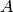
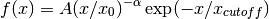

ExponentialCutoffPowerLaw1D¶
- class astropy.modeling.powerlaws.ExponentialCutoffPowerLaw1D[source] [edit on github]¶
Bases: astropy.modeling.Fittable1DModel
One dimensional power law model with an exponential cutoff.
Parameters: amplitude : float
Model amplitude
x_0 : float
Reference point
alpha : float
Power law index
x_cutoff : float
Cutoff point
See also
Notes
Model formula (with  for amplitude and
 for alpha):
for alpha):
Attributes Summary
alpha amplitude param_names tuple() -> empty tuple x_0 x_cutoff Methods Summary
evaluate(x, amplitude, x_0, alpha, x_cutoff) One dimensional exponential cutoff power law model function fit_deriv(x, amplitude, x_0, alpha, x_cutoff) One dimensional exponential cutoff power law derivative with respect to parameters Attributes Documentation
- alpha¶
- amplitude¶
- param_names = ('amplitude', 'x_0', 'alpha', 'x_cutoff')¶
- x_0¶
- x_cutoff¶
Methods Documentation
- static evaluate(x, amplitude, x_0, alpha, x_cutoff)[source] [edit on github]¶
One dimensional exponential cutoff power law model function
- static fit_deriv(x, amplitude, x_0, alpha, x_cutoff)[source] [edit on github]¶
One dimensional exponential cutoff power law derivative with respect to parameters